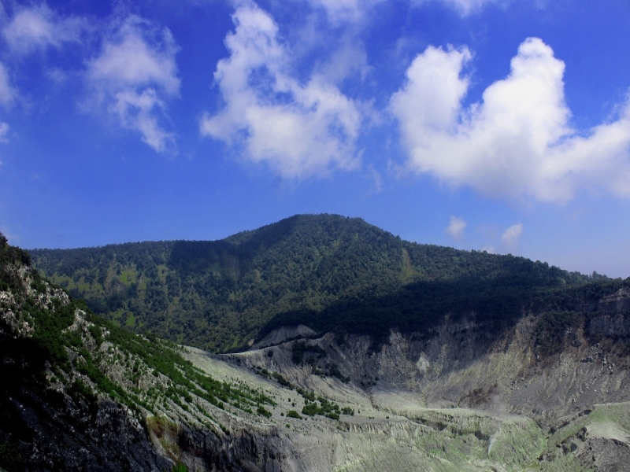
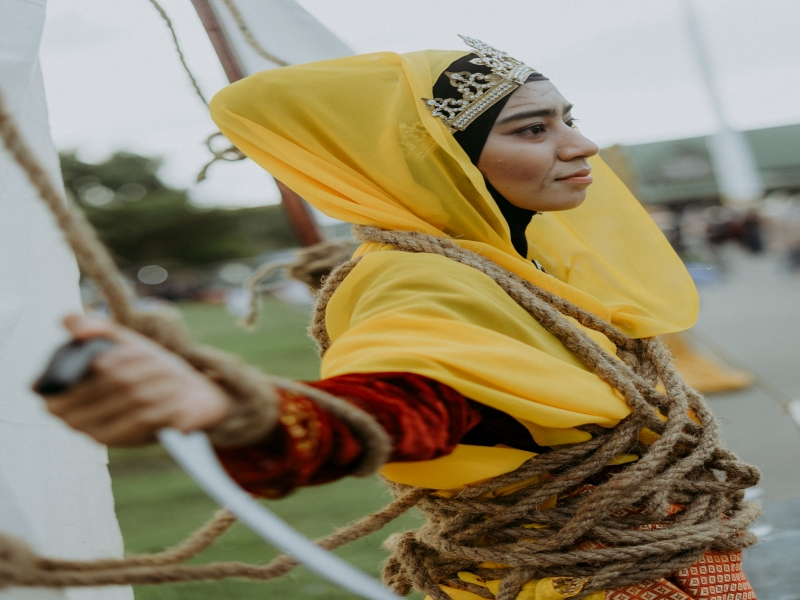
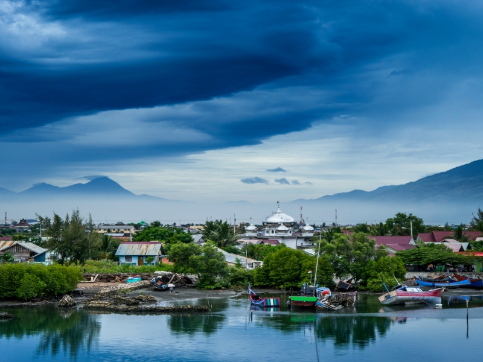

Sejarah Provinsi Aceh

Banda Aceh dikenal sebagai orang tua yang lekat dengan sejarah kejayaan Kerajaan Aceh Darussalam.
Pada masa Kesultanan, Banda Aceh dikenal dengan nama Banda Aceh Darussalam. Kota ini dibangun oleh
Sultan Johansha pada hari Jumat 1 Ramadhan 601 H (22 April 1205 M). Banda Aceh kini berusia 813
tahun. Banda Aceh adalah salah satu kota Islam tertua di Asia Tenggara. Kota Banda Aceh juga
berperan penting dalam menyebarkan agama Islam ke seluruh Nusantara/Indonesia. Karena itulah, kota
ini juga dikenal sebagai serambi Mekah. Pada masa kejayaan tahun
, Banda Aceh Darussalam dikenal sebagai kota provinsi besar yang juga dikenal sebagai pusat
pendidikan Islam. Akibatnya, banyak siswa dari Timur Tengah, India, dan negara lain mengunjungi kota
ini. Bandar Aceh Darussalam juga sering menjadi pusat perdagangan bagi para pedagang dari seluruh
dunia, termasuk Arab, Turki, Cina, Eropa dan India. Kerajaan Aceh mencapai puncak kejayaannya ketika
diperintah oleh tokoh legendaris sejarah Aceh, Sultan Iskandar Muda (1607-1636).
Banyak dari pelajar dan pedagang pendatang ini akhirnya menetap di Aceh dan menikah dengan perempuan
lokal. Hal ini menyebabkan terjadinya percampuran budaya. Bahkan hingga saat ini, budaya sudah
terlihat di setiap sudut kota Banda Aceh. Misalnya, budaya Chinatown di desa Punayon dan reruntuhan
makam Turki di desa Bitai.
Budaya Aceh

Aceh memiliki budaya yang relatif tinggi. Meskipun budaya ini pada dasarnya dibentuk oleh ajaran
Islam, pengaruh Hindu yang terbentuk sebelum kedatangan Islam tetap berpengaruh. Hal ini tercermin
dalam adat istiadat, seni dan kehidupan sehari-hari. Kesenian tradisional Aceh memiliki identitas
religius, komunal, demokratis, dan heroik. Sastra Aceh terdapat di Aceh dan Melayu (Jawi), namun
dalam bahasa Arab baik kata maupun ungkapan memiliki pengaruh yang besar terhadap sastra Aceh.
Pakaian Aceh sehari-hari sesuai dengan prinsip-prinsip ajaran Islam. Selanjutnya, wanita perlu
menutupi alat kelaminnya. Dari bawah kaki ke tumit, lengan dan rambut. Pada zaman dahulu, wanita
biasanya mengenakan celana panjang, namun seiring berjalannya waktu keadaan ini berubah. Saat ini,
masyarakat Aceh lebih suka memakai sarung dan blus tie-dye, tetapi alat kelamin mereka masih
tertutup. Pakaian umumnya dikenakan oleh anak muda terutama anak sekolah, pelajar dan pekerja
kantoran. Bahkan, hampir semua pakaian dalam kisaran pakaian sederhana dan setengah telanjang tidak
ditemukan di pantai. Wisatawan jelas menjaga norma-norma daerah. Ada tanda-tanda kuat Islam pada
hari Senin dan Jumat di bulan Ramadhan. Selama bulan Ramadhan, semua orang dewasa perlu berpuasa,
tetapi tidak mengganggu aktivitas sehari-hari mereka. Dari matahari terbit sampai terbenam, orang
menahan diri dari makan, minum atau merokok. Bagi non muslim yang mencari makanan biasanya dapat
ditemukan di tempat-tempat tertentu yang diperbolehkan menjualnya tanpa mengganggu orang yang sedang
berpuasa. Namun, selama bulan puasa, restoran tutup hampir sepanjang hari. Jum'at adalah hari
terbaik, jadi baik pria maupun anak-anak pergi ke masjid untuk sholat. Kantor dan toko tutup selama
salat Jumat.
Gaya hidup masyarakat sangat penting. Misalnya, orang asing dan pendatang yang masuk ke desa harus
mematuhi peraturan tersebut, setidaknya karena kepala desa mengetahui keberadaan mereka. Lebih baik
lagi, dia memperkenalkan dirinya dan bisa saling mengenal. Ketika mereka bertemu, mereka mengucapkan
salam "Assalamu Alaikum" dan "Walaikum Salam". Orang yang menyapa orang lain terlebih dahulu
biasanya berjabat tangan. Forum Formal Forum memiliki sapaan yang sama antara pembicara dan audiens.
Mengirim dan menerima sesuatu dari orang lain selalu dilakukan dengan tangan kanan Anda.
Agama Aceh

Masyarakat yang tinggal di Aceh merupakan keturunan dari berbagai suku dan suku. Selain itu, ada
berbagai jenis seperti Arab, Cina, Eropa dan India. Orang Aceh yang asli sekarang diyakini berasal
dari Melayu kuno dari Champa, Kosincina dan Kamboja. Saat itu, penduduk asli mengungsi ke pedalaman
karena kedatangan pemuda Melayu yang berbudaya tinggi. Orang-orang ini sekarang dikenal sebagai
orang Gayo Aceh Tengah, tetapi sayangnya mereka juga dikenal sebagai orang Gayo Aceh Tenggara.
Beberapa referensi pelayaran laut menunjukkan bahwa Aches telah lama memiliki kontak internasional
dengan dunia luar, terutama raja Cina lama. Beberapa hadiah dari raja masih ada di Aceh hingga saat
ini. Attié asli adalah semua penganut Islam. Pemeluk agama lain seperti Protestan, Katolik, Budha,
dan Hindu hanyalah pendatang dari daerah lain, atau keturunan atau orang asing China. Secara
keseluruhan, jumlah pemeluk agama lain tidak melebihi 4 dari total penduduk. Sebagai pemeluk agama
Islam, masyarakat Aceh mengamalkan syariat Islam dalam kehidupan sehari-hari, bahkan banyak dari
adat istiadat mereka yang bersumber dari Islam. Oleh karena itu, Aceh dikenal dengan julukan
“Serambi Mekah”. Nama tersebut terkait dengan kedatangan Islam pertama dari Mekkah melalui Aceh ke
Indonesia. Kerajaan Islam Nusantara yang pertama ada di Aceh, dan umat Islam di daerah lain ingin
menunaikan ibadah haji ke Mekkah melalui Aceh. Aceh merupakan lokasi transit/waktu transit untuk
ziarah dan perjalanan pulang.
Dalam percakapan sehari-hari, orang Aceh biasanya berbicara bahasa Aceh dan bahasa Indonesia, tetapi
di ibukota ada beberapa dialek yang digunakan secara berbeda dalam dialek barat dan selatan, seperti
Minan, selain bahasa Aceh dan Indonesia. wilayah Melayu. Bahasa Gayo dituturkan di Aceh Tengah dan
dialek Arras dituturkan di Aceh Tenggara. Di beberapa tempat lain Anda akan menemukan bahasa/dialek
lokal.